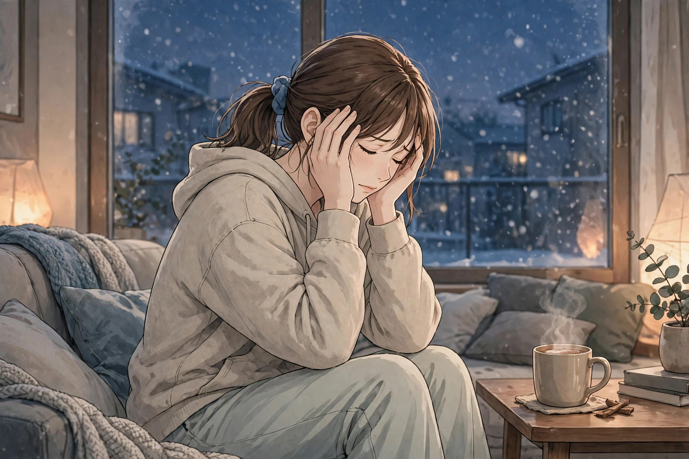
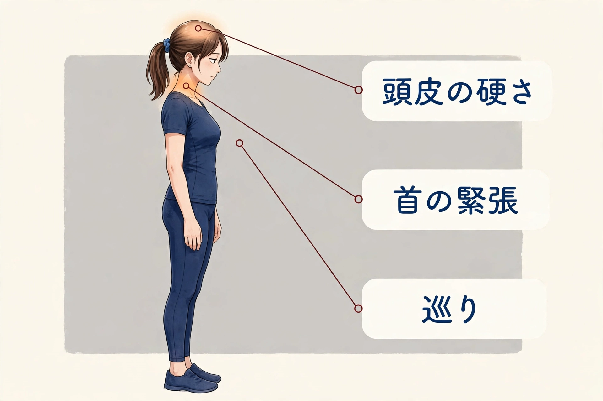

頭の重さ・すっきりしない感じ
美容整体ステラ・ポラリス東三国｜大阪市淀川区東三国・東三国駅徒歩5分・女性向け

痛みではない頭の重だるさをゆるめて、すっきり軽い感覚へ
頭が痛いわけではないのに、重だるくてすっきりしない。帽子をかぶっているような圧迫感があって、考えがまとまりにくい——そんな「頭の重さ」は、女性のお悩みの中でも相談の多いものの一つです。首や肩の緊張、目の疲れ、睡眠の質、気圧の変化などが重なって起こると言われており、夕方や天気が崩れる前に強く感じる方も少なくありません。このページでは、頭痛とは異なる「重だるさ」に絞って、その背景にある仕組みと、頭が軽く感じられる状態を目指す当サロンでのケア、ご自宅でできるセルフケアをご案内します。頭の重さは周りには伝わりにくい不調だからこそ、一人で抱え込んでしまう方も少なくありません。まずは下のチェックで、ご自身の状態を確かめてみてください。
ご予約はこちら（Coubic）こんなお悩みありませんか
- 頭が痛いわけではないのに、重だるくすっきりしない
- 帽子をかぶっているような、頭全体の圧迫感がある
- 夕方になると、頭の重さと一緒に集中力が落ちる
- 首や肩がこっている日に、頭の重さも増す気がする
- 天気が崩れる前や、気圧が下がる日に感じやすい
- 朝起きたときから、頭がぼんやり重く感じる
- 頭皮を触ると、硬くて動きにくい感じがする
当てはまる項目が多いほど、首・肩の緊張と巡りの滞りが積み重なっている目安とされています。頭の重さは「痛み」とは別のサインとして捉え、首・肩まわりから見直すことが大切です。次のセルフチェックで、頭皮と首の状態の傾向を確かめてみましょう。
簡単セルフチェック（頭皮と首のチェック）
指の腹で、頭皮の動きと首の張りを確かめる簡単な方法です。
- 両手の指の腹を頭頂部に当て、頭皮を前後左右にやさしく動かしてみます。
- 次に、首の後ろから肩にかけてを手のひらで包み、張りや冷たさを確認します。
- 頭皮が硬く動きにくい、首の付け根が張っている場合は、首・肩まわりの緊張が重なっている目安と言われています。
※これは診断ではありません。ご自身の状態の傾向を知る目安としてお使いください。
頭の重さ・すっきりしない感じの原因と仕組み
「痛み」ではない重だるさの正体
頭の重さは、ズキズキする痛みとは異なり、頭全体が締めつけられるような、ぼんやりした重だるさとして感じられます。首や肩の筋肉が緊張し続けると、頭まわりの巡りが滞り、重さのような感覚につながると言われています。図1のように、頭の重さは頭そのものよりも、首・肩の緊張とつながって現れることが多いのが特徴です。我慢できる程度の重さだからこそ、ケアの優先順位が下がり、積み重なってしまう方も少なくありません。

図1 首・肩の緊張と頭の重さの関係、頭皮までゆるんで軽く感じる状態のイメージ。痛みとは分けて捉えることが、ケアの第一歩です。体の状態には個人差があります。
頭皮の硬さと緊張
頭の表面には薄い筋肉があり、緊張が続くと頭皮が硬く、動きにくくなります。食いしばりや目の疲れともつながりやすく、額やこめかみの張りが頭全体の重さに重なることもあります。頭皮がゆるむと、頭が軽く感じられる方は少なくありません。髪を結ぶ位置がいつも同じ方や、帽子を長時間かぶる方も、頭皮への負担が重なりやすいと言われています。
姿勢と頭の位置
頭が前に出た姿勢では、重い頭を支えるために首の後ろ側が働きっぱなしになり、後頭部の付け根に負担が集中します。夕方に向けて重さが増す場合は、日中の姿勢の積み重ねが背景にある目安になります。頭が体の軸の上にのる姿勢は、首・肩の負担を減らす土台になります。スマートフォンを見る時間が長い方ほど、あごが前に出た姿勢が習慣になりやすい傾向があります。
睡眠・気圧・自律神経の関わり
睡眠不足や浅い眠りが続くと、朝から頭が重く感じやすくなります。また、気圧が下がるタイミングで巡りのバランスが乱れ、重だるさを感じる方もいます。緊張と休息の切り替えがうまくいかない状態が続くと、頭の重さは長引きやすくなると言われています。休みの日に長く眠ってもすっきりしない場合は、眠りの質そのものを見直す視点も大切になります。
セルフケアで足りる場合・サロンケアが向く場合
頭の重さが軽く、首・肩を温めたり頭皮をほぐしたりするとすっきり感じる日が多い場合は、まずご自宅でのセルフケアを続けて様子を見る方法があります。一方で、首・肩の緊張が強く自分ではゆるめにくい、頭皮まで硬くなっている感じがする、夕方の重だるさが続いているという場合は、サロンでのケアが向いている目安になります。サロンでは、頭皮から首・肩までを丁寧にゆるめて、施術後に「頭が軽い」「視界が明るく感じる」と感じやすい状態を目指します。なお、受診の目安に当てはまる場合は、サロンより先に医療機関へご相談ください。
当サロンでのケア
当サロンの頭の重さケアは、「頭皮から首・肩までをゆるめ、頭がすっと軽く感じる状態」を目指す組み立てです。まず頭の位置と首・肩、頭皮の状態を一緒に確認し、重だるさの出方に合わせて、部位と目的に合わせて3つの手技を組み合わせます。
美容整体：頭の位置と背骨のラインを整え、首の後ろ側にかかる負担を減らす姿勢の土台をつくることを目的に。まっすぐ立つ感覚を取り戻すお手伝いをします。
アロマオイルマッサージ：首すじから肩、背中の上部をオイルでゆるめ、巡りが流れやすい状態を目指します。香りに包まれる時間そのものが、緊張をほどく助けになります。
もみほぐし：後頭部の付け根や頭皮、こめかみまわりなど、張りやすいポイントを丁寧にほぐし、頭の重さが抜けていく感覚を目指して進めます。
ケアを通して目指すのは、こんな変化です。
- 頭全体が軽く、すっきり感じる状態へ
- 頭皮がゆるんで、指で動かしやすい柔らかさへ
- 首の付け根の張りがやわらぎ、首が回しやすい感覚へ
- 目のまわりの重さまで、すっと抜ける感覚へ
- 夕方の重だるさに備える、日常のほぐし方を知るきっかけへ
施術の仕上げには、頭皮のほぐし方や、首の付け根を温める方法もお伝えします。頭の軽さを感じる時間を持つことが、姿勢と緊張のクセを見直すきっかけになります。気圧の変化で重くなりやすい方は、その日の過ごし方の工夫もあわせてご案内します。施術中に気になることがあれば、遠慮なくお声がけください。

施術の流れ
ご来店後、気になる部位やお悩み、ご希望の強さなどをうかがいます。完全個室のため、周りを気にせずお話しいただけます。
頭の位置や首の動き、頭皮と肩の張り具合などを一緒に確認し、その日の状態に合わせた施術の進め方をご案内します。重さの出るタイミングもお知らせください。
美容整体を中心に、ご希望に応じてアロマオイルマッサージ、もみほぐしを組み合わせて進めます。強さは途中でも調整できます。
施術後の状態を確認し、ご自宅で続けやすいセルフケアのポイントをお伝えします。次回の目安についても、ご希望があればご案内します。
料金
| コース | 通常価格 | キャンペーン価格（12/25まで） |
|---|---|---|
| 80分 | 8,000円 | 3,000円 |
| 100分 | 10,000円 | 4,000円 |
| 120分 | 12,000円 | 5,000円 |
クリスマスキャンペーンは12月25日まで、ご新規様もリピーターの方も対象です。施術内容は当日の状態とご希望に合わせて組み立てます。
ご自宅でできるセルフケア
- 頭皮ほぐし：両手の指の腹で頭全体を包み、小さな円を描くようにゆっくり動かします。1〜2分を目安に、入浴中など体が温まったタイミングが取り入れやすい習慣です。
- 首の付け根を温める：蒸しタオルや温かいシャワーを首の後ろに当て、5分ほど温めます。緊張がゆるみやすい状態をつくり、重だるさの予防にもつながります。
- 目の休憩：画面作業は1時間に一度、遠くを見て目を休ませます。額やこめかみを指の腹でやさしくほぐすのも、頭の重さ対策になります。
- 肩の上げ下げ：両肩を上げて5秒キープし、ストンと下ろす動きを5回。首・肩の緊張をほぐす合間の習慣として、デスクワークの合間に取り入れてください。
ご自宅でのケアに：セルフケア資料ライブラリ（無料）
このお悩みに合わせたセルフケアの考え方を、無料の資料ライブラリでご紹介しています。
セルフケア資料ライブラリを開く →
受診の目安
次のような場合は、施術の前に医療機関への受診をおすすめします。重さではなく強い痛みがある／今までにない突然の激しい痛み／手足のしびれや言葉のもつれ、視界の異常を伴う場合／発熱を伴う場合／頭を打ったあとに始まった場合／めまいや吐き気が強く、日常生活に支障がある場合。頭の不調は体の大切なサインのことがあります。気になる症状があるときは、まず医療機関でご相談ください。
よくある質問
Q. 初めてでも大丈夫ですか？
はい。当サロンは完全予約制・完全個室で、1日3組までのご案内です。最初にカウンセリングで頭の重さの様子や首・肩の状態をうかがい、無理のない内容から始めます。施術の前後で「頭が軽くなった」「視界が明るい感じがする」といった感覚の違いを一緒に確認しながら進めますので、初めての方も安心してご利用いただけます。
Q. 頭痛持ちでも受けられますか？
強い痛みがある日は、無理をせず医療機関への相談をおすすめしています。痛みではなく重だるさが中心の日であれば、首・肩と頭皮をゆるめるケアで進められます。当日の状態に合わせて圧や部位を調整しますので、ご予約の際に、その日の様子をお知らせいただけると当日の組み立てがスムーズです。
Q. コースはどう選べばいいですか？
80分・100分・120分のコースがあり、ケアしたい部位の広さやお時間のご都合に合わせて選べます。頭まわりに加えて首・肩、背中までゆっくり整えたい方には、100分が選ばれることが多いコースです。迷われる場合は、ご予約の際にお気軽にご相談ください。
Q. 場所と予約方法を教えてください。
大阪市淀川区東三国、東三国駅から徒歩5分です。完全予約制のため、予約サイト（Coubic）またはLINE公式アカウントからご予約をお願いしています。
Q. 男性も受けられますか？
当サロンは女性向けのため、男性の方は、同じ東三国の男性専用整体院「北辰堂」をご案内しています。
施術者について
平賀建人（施術歴30年）
鍼灸師・登録販売者・アロマセラピスト・パーソナルトレーナーの資格を持ち、美容整体を中心に、アロマオイルマッサージ、もみほぐしを、その日の状態とご希望に合わせて組み合わせて施術します。このページの内容は、施術者の知識と経験をもとに作成しています。

料金・ご予約
ご新規様もリピーターの方も 12/25まで
80分 3,000円／100分 4,000円／120分 5,000円
通常価格は80分8,000円／100分10,000円／120分12,000円です。施術内容はご希望に合わせて組み立てます。
営業時間：月〜土 17:00〜23:00／日 10:00〜23:00（完全予約制）｜電話：080-2468-3086
大阪府大阪市淀川区東三国2丁目25番4号101（東三国駅徒歩5分）
専門解説で詳しく見る
仕組みから詳しく知りたい方は、専門解説シリーズのこちらの記事もあわせてご覧ください。